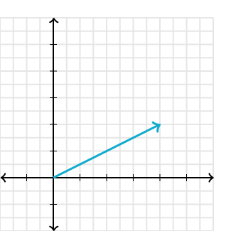

Vectores
Un vector es una entidad matemática que tiene tanto magnitud como dirección. En términos sencillos, puedes imaginarlo como una flecha. La longitud de la flecha representa la magnitud, mientras que hacia dónde apunta indica la dirección. Los vectores se usan comúnmente en física, geometría y programación (especialmente en gráficos y simulaciones). Se suelen escribir como coordenadas en un espacio (por ejemplo, (x, y) para un vector en dos dimensiones).
Los vectores son herramientas fundamentales en matemáticas y física, y pueden clasificarse en varios tipos dependiendo de sus características:
- Vectores libres: No tienen un punto específico de inicio. Se definen únicamente por su magnitud y dirección.
- Vectores deslizantes: Tienen un punto de aplicación que puede desplazarse a lo largo de su línea de acción sin alterar sus efectos.
- Vectores fijos o ligados: Están asociados a un punto de origen específico y no pueden moverse.
- Vectores concurrentes: Son aquellos cuyos puntos de origen o de aplicación coinciden en un mismo lugar.
Estas características hacen que los vectores sean útiles para describir situaciones físicas como fuerzas, desplazamientos, aceleraciones, y mucho más:
- Magnitud (o módulo): Es el tamaño o longitud del vector, y se calcula con una fórmula basada en sus componentes.
- Dirección: Indica hacia dónde apunta el vector.
- Punto de aplicación: Es el lugar donde comienza o se aplica el vector.
- Sentido: Dentro de la dirección, el vector puede apuntar hacia un lado u otro.
Los vectores tienen una amplia gama de aplicaciones en matemáticas, física y la vida cotidiana. Aquí algunos ejemplos:
- Desplazamiento: En la navegación por GPS, los vectores indican la dirección y la distancia a recorrer.
- Fuerzas: En física, las fuerzas se representan mediante vectores para analizar cómo interactúan diferentes elementos en un sistema.
- Velocidad: En el tráfico y la conducción autónoma, los vectores ayudan a calcular trayectorias y evitar colisiones.
- Gráficos por computadora: En diseño gráfico y videojuegos, los vectores se utilizan para representar formas y movimientos de manera eficiente.